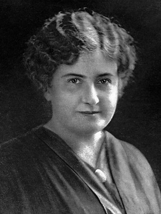
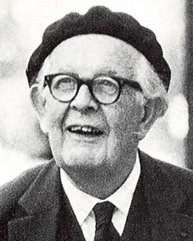
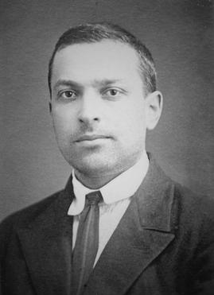
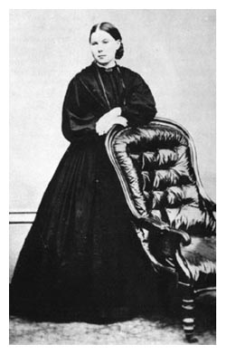
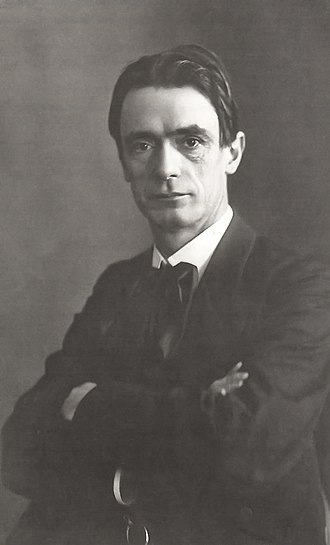
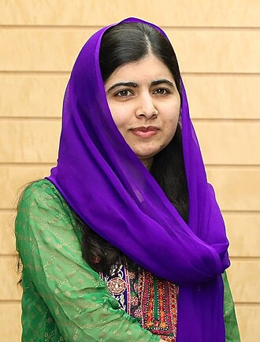
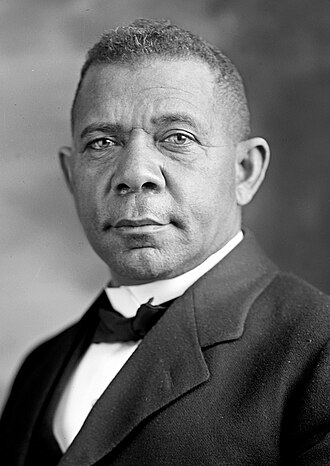

Maria Montessori s-a născut la 31 august 1870 în Ancona, Italia și a studiat medicina la Universitatea din Roma. A fost prima femeie care a absolvit facultatea de medicină în Italia și una din primele femei medic care au practicat medicina cu succes. A început să aplice multe din ideile sale personale despre educarea copiilor foarte tineri, cu vârste cuprinse între un an și cinci ani, pe când s-a ocupat de copii cu deficiențe mentale. Și-a perfecționat ideile și aplicarea acestora în practică începând cu 1907, de când a fost numită la conducerea unui grup de creșe și grădinițe dintr-o zonă foarte săracă a orașului Roma. Acolo a început să aplice consecvent ideile sale educaționale, care se concretizaseră între timp într-o adevărată metodă educațională, metoda Montessori. Mult mai târziu, când metoda sa educațională a devenit larg cunoscută în Italia, Europa și în întreaga lume, generând zeci și zeci de școli Montessori, Maria Montessori a călătorit foarte mult, supervizând sistemul școlilor Montessori, scriind și ținând conferințe.

Tema principală a lucrărilor lui Dewey a fost credința sa profundă în democrație, fie ea în politică, educație sau comunicare și jurnalism.[9] După cum a declarat Dewey însuși în 1888, pe când era încă la Universitatea din Michigan, „Democrația și idealul unic, ultim, etic al umanității sunt în opinia mea sinonime.” Dewey a considerat două elemente fundamentale – școlile și societatea civilă – ca fiind subiecte majore care necesită atenție și reconstrucție pentru a încuraja inteligența experimentală și pluralitatea. El a afirmat că democrația completă trebuie obținută nu doar prin extinderea dreptului de vot, ci și prin asigurarea existenței unei opinii publice complet formate, realizată prin comunicarea între cetățeni, experți și politicieni.
Dewey a fost una dintre figurile principale asociate cu filosofia pragmatismului și este considerat unul dintre gânditorii fondatori ai psihologiei funcționale. Lucrarea sa „The Reflex Arc Concept in Psychology”, publicată în 1896, este considerată prima lucrare majoră din școala funcționalistă de psihologie (Chicago).Un sondaj Review of General Psychology, publicat în 2002, l-a clasat pe Dewey drept al 93-lea cel mai citat psiholog al secolului al XX-lea.
Dewey a fost, de asemenea, un important reformator educațional pentru secolul al XX-lea.Un intelectual public binecunoscut, el a fost o voce majoră a educației progresiste și a liberalismului.[13][14] În timp ce era profesor la Universitatea din Chicago, el a fondat școlile de laborator de la Universitatea din Chicago, unde a putut să aplice și să-și testeze ideile progresiste despre metoda pedagogică.[15][16] Deși Dewey este cunoscut cel mai bine pentru publicațiile sale despre educație, el a scris și despre multe alte subiecte, inclusiv epistemologie, metafizică, estetică, artă, logică, teorie socială și etică.

Piaget a acordat o mare importanță educației copiilor. În calitate de director al Biroului Internațional de Educație, el a declarat în 1934 că „numai educația este capabilă să salveze societățile noastre de la un posibil colaps, fie el violent, fie treptat”.Teoria sa despre dezvoltarea copilului este studiată în programele de educație preliminară. Educatorii continuă să încorporeze strategii bazate pe constructiviste.
Piaget a creat Centrul Internațional de Epistemologie Genetică la Geneva în 1955, în timp ce era la facultatea Universității din Geneva, și a condus centrul până la moartea sa în 1980.Numărul de colaborări pe care înființarea sa le-a făcut posibil și impactul lor, au dus în cele din urmă la ca Centrul să fie menționat în literatura de specialitate drept „fabrica lui Piaget”.
Potrivit lui Ernst von Glasersfeld, Piaget a fost „marele pionier al teoriei constructiviste a cunoașterii”.Cu toate acestea, ideile sale nu s-au popularizat pe scară largă până în anii 1960.Acest lucru a condus apoi la apariția studiului dezvoltării ca o subdisciplină majoră în psihologie.Până la sfârșitul secolului al XX-lea, Piaget era al doilea după B. F. Skinner ca psiholog cel mai citat al acelei epoci.

Ideile sale majore includ:
Originea socială a minții: Vygotsky credea că abilitățile mentale și cognitive umane nu sunt determinate biologic, ci sunt create și modelate prin utilizarea limbajului și a instrumentelor în procesul de interacțiune și construcție a mediului cultural și social.
Importanța medierii: El a văzut medierea ca fiind cheia dezvoltării umane, deoarece duce la utilizarea instrumentelor culturale și devine o cale de dezvoltare psihologică prin procesul de interiorizare.
Zona de dezvoltare proximală: Vygotsky a introdus conceptul ZPD care se referă la decalajul dintre nivelul actual de dezvoltare al unui copil și nivelul pe care acesta este capabil să-l atingă cu instrumente oferite de alții cu mai multe cunoștințe.
Semnificația jocului: Vygotsky a văzut jocul ca un aspect crucial al dezvoltării copiilor, ca cel mai bun sandbox pentru a construi și dezvolta practica de mediere.

Ea a co-fondat Uniunea Educațională Națională a Părinților (PNEU), o organizație care a oferit resurse părinților care își educ copiii acasă. Ea a lansat și a servit ca redactor-șef la Parents' Review pentru a păstra legătura cu membrii PEU.
În 1890 a cunoscut-o pe Henrietta Franklin, în ceea ce alții consideră a fi „experiența inspiratoare” a vieții lui Franklin.Până în 1892 Franklin a deschis prima școală în Londra, bazată pe principiile lui Mason. În 1894, Franklin a devenit secretarul Parents’ National Educational Union și a întreprins turnee de discursuri în marile orașe din America, Europa și Africa de Sud. Ea și-a dedicat banii cauzei și a scris în numele acesteia. Biografia lui Franklin menționează că operațiunile continue ale PNEU se datorează ei.

În prima fază, mai orientată filozofic, a acestei mișcări, Steiner a încercat să găsească o sinteză între știință și spiritualitate.Lucrarea sa filozofică din acești ani, pe care a numit-o „știință spirituală”, a căutat să aplice ceea ce el considera claritatea gândirii caracteristică filozofiei occidentale la întrebările spirituale,: 291 diferențiind această abordare de ceea ce el considera a fi abordări mai vagi. la misticism. Într-o a doua fază, începând în jurul anului 1907, a început să lucreze în colaborare într-o varietate de medii artistice, inclusiv teatru, dans și arhitectură, culminând cu construirea Goetheanum, un centru cultural pentru a găzdui toate artele. În cea de-a treia fază a lucrării sale, începând după Primul Război Mondial, Steiner a lucrat la diferite proiecte aparent aplicate, inclusiv educația Waldorf,agricultura biodinamică și medicina antroposofică.
Steiner a susținut o formă de individualism etic, căreia i-a adus ulterior o abordare mai explicită spirituală. Și-a bazat epistemologia pe viziunea asupra lumii a lui Johann Wolfgang Goethe, în care „gândirea... nu este mai mult și nici mai puțin un organ de percepție decât ochiul sau urechea. Așa cum ochiul percepe culorile și sunetele urechii, așa cum gândirea percepe ideile.”Un fir consecvent care străbate opera sa este scopul de a demonstra că nu există limite pentru cunoașterea umană.

Fiica activistului pentru educație Ziauddin Yousafzai, s-a născut într-o familie paștun Yusufzai din Swat și a fost numită după eroina populară afgană Malalai din Maiwand. Considerând că Abdul Ghaffar Khan, Barack Obama și Benazir Bhutto sunt modelele ei de urmat, ea a fost, de asemenea, inspirată de gândurile și activitatea umanitară a tatălui ei.La începutul lui 2009, când avea 11 ani, ea a scris un blog sub pseudonimul ei Gul Makai pentru BBC Urdu, pentru a-și detalia viața în timpul ocupației talibanilor din Swat. În vara următoare, jurnalistul Adam B. Ellick a realizat un documentar New York Times despre viața ei, când Forțele Armate pakistaneze au lansat operațiunea Rah-e-Rast împotriva militanților din Swat.În 2011, ea a primit primul premiu național pentru pace pentru tineret din Pakistan.Ea a crescut în proeminență, dând interviuri în presa scrisă și la televiziune și a fost nominalizată la Premiul Internațional pentru Pace pentru Copii de către activistul Desmond Tutu.

Născut în sclavie la 5 aprilie 1856, în Hale's Ford, Virginia, Washington a fost eliberat când trupele americane au ajuns în zonă în timpul Războiului Civil. În tinerețe, Booker T. Washington și-a făcut drum prin Hampton Normal and Agricultural Institute și a urmat o facultate la Wayland Seminary. În 1881, a fost numit primul lider al noului Institut Tuskegee din Alabama, un institut pentru învățământul superior negru. A extins colegiul, înrogând studenți în construcția de clădiri. Munca la facultate a fost considerată fundamentală pentru educația mai largă a studenților. El a obținut proeminență națională pentru discursul său din Atlanta din 1895, care a atras atenția politicienilor și a publicului. Washington a jucat un rol dominant în politica negrilor, câștigând un sprijin larg în comunitatea neagră din sud și printre albii mai liberali. Washington a scris o autobiografie, Up from Slavery în 1901, care a devenit un text major. În acel an, a luat masa cu Theodore Roosevelt la Casa Albă, care a fost prima dată când o persoană de culoare l-a întâlnit public pe președinte în condiții egale. După o boală, a murit în Tuskegee, Alabama, pe 14 noiembrie 1915.